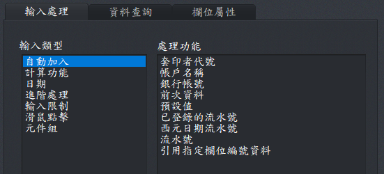

文件在完成「文件內容設計」、「資料配置」、「資料處理」後，即已具備「匯入套印」的功能，如果想要額外提供「輸入套印」的功能，就必需在本視窗進行設定。
這裏僅處理資料字串類型項目，而且該項目必需先於「資料配置設定」視窗，被置於「A.取得資料項目」區域，才能顯示在此區域內指定資料處理功能。
為便利使用者輸入工作，可以「新增項目」，以便進階的資料處理功能，例如「收票人代號」讓使用者可以輸入收票人代號查出收票人的相關資料，但這些資料並不會印在文件上面。
為簡化使用輸入的方式進行套印，本軟體提供了「輸入處理」工作頁及「資料查詢」工作頁2項功能，說明如下：

| 類別 | 編號 | 功能 | 參數一 | 參數二 | 說明 |
|---|---|---|---|---|---|
| 計算功能 | 1 | 金額加總 | 前項數目 | 將指定的「前項數目」進行加總計算，並做為目前輸入項目的值。例如：「前項數目」設「3」，就會將前3個輸入項目的值進行加總，並作為目前輸入項目的值。 | |
| 2 | 數量 * 單價 = 總價 | 將前2個輸入項目的值進行相乘計算後，作為目前輸入項目的值。例如：黃金存摺摺1公克1200元，若買5個公克就會輸出6000元。 | |||
| 日期 | 1 | 免輸入分隔符號轉西元日期 | 輸入臺灣日期或西元日期都可自動轉成系統內定的日期格式，例如：輸入「1050127」或「20160127」都會轉成「2016/01/27」。 | ||
| 2 | 自動加入日期 | 月 | 日 | 進入輸入項目後，立即顯示當日的日期，如果有設定「月」、「日」的參數，會先進行計算，再顯示當日的日期。 | |
| 輸入設定 | 1 | 限定數字 | 限定只能輸入數字及數字相關符號.- | ||
| 2 | 限制長度 | 長度 | 限制資料能夠輸入的長度，例如帳號僅限定輸入14位數 | ||
| 3 | 英文以大寫呈現 | 輸入英文時，以大寫呈現，例如：輸入abc會出現「ABC」 | |||
| 4 | 英文數字轉半型字體 | 輸入英文及數字時，會以半型字體呈現，例如：輸入aＢc１２3，離開輸入項目時，會呈現「aBc123」 | |||
| 5 | 英文數字轉全型字體 | 輸入英文及數字時，會以全型字體呈現，例如：輸入aＢc１２3，離開輸入項目時，會呈現「ａＢｃ１２３」 | |||
| 6 | 依字數分割字串 | 分割 | 輸入字串超過指定的長度時，自動分割為2行。例如：支票「憑票支付」如果只有6公分(約12個字)的寬度，一但超過分割指定的字數(例如：12個字)就自動分割成2行。 | ||
| 7 | 擇一輸入 | 輸入一個值以決定下一個輸入項目。例如：聯邦銀行存取款憑條，有2個地方可以輸入帳號，如果輸入1就套印取款帳號(另1個隱藏)，若輸入2就套印存款帳號。 | |||
| 資料查詢 | 1 | 自動加入套印者代號 | 進入輸入項目後，於輸入項目自動加入套印者代號 | ||
| 2 | 自動加入帳戶名稱 | 於輸入項目自動加入套印者帳號名稱 | |||
| 3 | 自動加入銀行帳號 | 於輸入項目自動加入套印者銀行帳號 | |||
| 4 | 自動加入前次資料 | 資料輸入並經列印(或預覽)後，於新增的套印上面會自動將前次的輸入內容帶入。 | |||
| 5 | 已登錄的流水號 | 將已先於「資料管理 > 文件領用登錄」的票號自動帶出。例如：支票號碼，帶出票號的規則是「登錄順序 >票號大小」且未曾用過(票據屬性為空白)的支票。 。 | |||
| 6 | 西元日期流水號 | 序號長度 | 系統自動當日(西元日期 + 指定長度)的流水號。 | ||
| 7 | 流水號 | 任意輸入數值或字串(最後面要有數值即可)，系統會於列印後，更新流水號(加1)。 | |||
| 8 | 關鍵字查詢客戶名稱 | 輸入關鍵字時會自動查詢客戶(收款人)名稱，如果符合的資料僅剩1筆時，系統就自動加入該客戶編號，以利找出客戶相關資料。 |
資料查詢功能一覽表
| 類別 | 編號 | 功能 | 說明 |
|---|---|---|---|
| ACCOUNT | 1 | 未設定 | |
| CUSTOMER | 2 | 以收票人代號查詢 | 輸入收票人代號，即可查詢收票人相關資料 |
| 3 | 以收票人名稱查詢 | 輸入收票人名稱後，即可查詢收票人相關資料，可搭配關鍵字查詢客戶名稱輸入處理功能，以簡少輸入的字數。 |